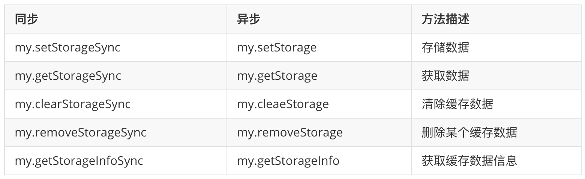

支付宝小程序知识梳理
支付宝小程序开发和微信小程序开发的项目结构、运行机制和发布步骤都大同小异，此篇blog可以让你对支付宝小程序开发有一个基本的认识，从而顺利完成小程序的一些日常开发工作。
前期准备
支付宝开发者开发者入驻
流程化的信息直接移步官方文档开发者入驻流出。
创建小程序
直接移步官方文档创建小程序。
注意：创小程序成功之后，开发人员通过ide创建相应的项目，ide会让开发人员通过支付宝扫码登录，之后ide就会注册你的支付宝信息，你通过ide调用的支付宝鉴拿的都是你的支付宝信息，不需要通过手机运行。
开发环境安装
安装支付宝小程序IDE
安装npm
- 安装node.js后即获得npm工具node.js安装
小程序开发
小程序项目结构介绍
app.json
1
2
3
4
5
6
7
8
9
10
11
12
13
14
15
16
17
18
19
20
21
22
23
24
25
26
27
28
29
30
31
32
33
34
35
36
37
38
39
40
41
42
43
44
45{
// 此处用于注册项目中的所有页面，第一个为首页，其他位置无所谓
"pages": [
"pages/index/index",
"pages/mine/mine",
"pages/order/order"
],
// 配置window相关信息
"window": {
"defaultTitle": "demo", // 页面默认标题
"navigationStyle": "default",
"pullRefresh": true, // 是否允许下拉刷新，默认 true
"allowsBounceVertical": 'YES', // 是否允许向下拉拽。默认 YES, 支持 YES/NO
// 导航栏透明设置。默认 none，支持 always 一直透明 / auto 滑动自适应 /none 不透明
"transparentTitle": none,
"titlePenetrate": 'NO', // 是否允许导航栏点击穿透。默认 NO，支持 YES / NO
"showTitleLoading": 'NO', // 进入时显示导航栏的 loading。默认 NO，支持 YES / NO
"titleImage": '', // 导航栏图片地址
"titleBarColor": HexColor, // 导航栏背景色。例：白色 "#FFFFFF"
"backgroundColor": HexColor, //
"backgroundImageColor": HexColor, // 下拉露出显示背景图的底色。例：白色 "#FFFFFF"
"backgroundImageUrl": '', // 下拉露出显示背景图的链接
"gestureBack": 'YES', // 仅支持 iOS，是否支持手势返回。默认 YES，支持 YES / NO
"enableScrollBar": 'NO', // 仅支持 Android，是否显示 WebView 滚动条。默认 YES
"onReachBottomDistance": 30, // 页面上拉触底时触发时距离页面底部的距离，单位为 px
"responsive": 'NO' // rpx 单位是否宽度自适应,默认true，为 false 时，2 rpx 将恒等于1px
},
// 如果页面是tabbar类型，需要在此配置。
// 一个app只能有一个tabbar，如果的二级页面的tabbar形式，请自定义组建实现，哈哈想哭。
"tabBar": {
"textColor": "#dddddd",
"selectedColor": "#49a9ee", // 选中的文字颜色
"backgroundColor": "#ffffff",
"items": [
{
"pagePath": "pages/index/index", // 第一个item必须是首页，真他妈是坑
"name": "首页"
},
{
"pagePath": "pages/logs/logs",
"name": "日志"
}
]
}
}注意：tabbar只能用在首页[香菇]
app.css
作为全局样式，一般用来设置页面的背景、宽高。
app.js
1
2
3
4
5
6
7
8
9
10
11
12
13
14
15
16
17
18
19
20
21
22
23
24
25
26
27
28
29
30
31
32
33
34App({
// 第一次打开
onLaunch(options) {
console.log(options.query); // {number:1}
console.log(options.path); // x/y/z
},
// 从后台被 scheme 重新打开
onShow(options) {
console.log(options.query); // {number:1}
console.log(options.path); // x/y/z
},
// 监听小程序隐藏
onHide() {
},
// 监听小程序错误
onError(error:String) {
},
// 全局分享配置
onShareAppMessage(object: Object) {
},
// 当 Promise 被 reject 且没有 reject 处理器时，会触发 onUnhandledRejection
onUnhandledRejection(object: Object) {
},
// 用于记录app的一些全局信息，比如token等。
// 在其他js页面通过getApp().globalData.token获取值
globalData: {
token: '',
name: '',
},
});pages目录
此目录存放小程序的页面，右击选择create page，ide自动给你生成如下相应的文件
4.1 xx.acss （页面的css样式）
4.2 xx.axml （页面的布局）
4.3 xx.js （页面的js）
4.4 xx.json（页面的配置信息）
components目录
此目录存放小程序的组建，右击选择create component，ide自动给你生成相应的文件
小程序的基础语法
数据类型
1.1 String：字符串
1
var str = "hello world"
1.2 Boolean：布尔值
1
var bol = true
1.3 Number：数值
1
var num = 5.6
1.3 Array：数组
1
var arr = []
1.4 Object：对象
1
var obj = null
1.5 Date：日期
1
var date = getDate() // 生成Date需要使用getDate方法
1.6 Regexp：正则表达式
1
var reg = getRegExp(pattern[, flags]) // 生成Regexp需要使用getRegexp方法
1.7 Function：函数
1
2
3testFun() {
return true;
}1.8 数据类型判断
1
2
3console.log(arr.constructor // Array
// typeof能分辨出number、boolean和string，但是其他的类型只能识别是object
console.log(typeof arr) // object注释
如果你的代码写不出让人读注释的水平，那么你就老老实实写注释，OK？
1.1 单行注视
1
2// typeof能分辨出number、boolean和string，但是其他的类型只能识别是object
console.log(typeof arr) // object1.2 多行注视
1
2
3
4
5
6/*
* @obj 订单编号
*/
testFunc(obj) {
// 你的业务逻辑
}函数
3.1 函数定义同js，你说你不懂js？移步js语法
3.2 让外界的js文件使用你的js
1
2
3
4
5
6
7
8
9
10
11
12
13
14// util.js文件内容
export const getStatus = function (obj) {
// 你的业务逻辑
}
// 需要引用的js文件（index.js）
// 需要先import
import { getStatus } from '../util.js'
/*
* 获取订单数据
*/
rquestOrder(){
var order = ....
var status = util.getStatus(order.status) // 引用调用
}3.3 让外界的布局xml文件引用你的sjs
支付宝小程序的布局文件只能引入后缀为sjs的js文件
1
2
3
4
5
6
7// util.sjs文件内容
export const getStatus = (obj) => {
// 你的业务逻辑
}
// 需要引用的axml文件（index.axml）
<import-sjs name="util" from="./util.sjs"/>
<text>{{util.getStatus}}</text>
小程序的常用接口
路由
1.1 my.switchTab({url:””})
需要配合tabbar使用
1.2 my.reLaunch({url:””})
关闭当前所有页面，跳转到应用内的某个指定页面
1.3 my.redirectTo({url:””})
是关闭当前页面，跳转到应用内的某个指定页面，没有返回
1.4 my.navigateTo({url:””})
从当前页面，跳转到应用内的某个指定页面，有返回
1.5 my.navigateBack()
关闭当前页面，返回上一级或多级页面
下拉刷新
拨打电话
1
my.makePhoneCall({number: '95888'})
网络请求
小程序线上支持https请求
小程序线上只支持后台配置的白名单访问，线下可以通过小程序详情配置忽略域名检查。
1
2
3
4
5
6
7
8
9
10
11
12
13
14
15
16
17
18
19
20
21
22
23
24
25
26
27
28
29
30
31
32
33
34// 一般我们会封装网络请求api到一个js文件（http.js）
// 提供一个默认的请求option，自己可以再修改其中的值
export const defaultOption = {
method: 'GET', //
header: {
'content-type': 'application/x-www-form-urlencoded',
},
timeout: 30000,
dataType: 'json',
responseType: 'text',
responseCharset:'utf-8',
}
// 提供一个请求调用
export const httpClient = (url,data,option) => {
return new Promise((resolve,reject)=>{
// 将所有可枚举属性的值从一个或多个源对象分配到目标对象
option = Object.assign({},defaultOption,option)
option.url = url
option.data = data || {} // 等同data==null?{}:data
option.success = async(res) => {
console.log(JSON.stringify(res))
resolve(res)
}
option.fail = (res) => {
console.log(res)
reject(res)
}
my.request(option) // send request
});
}
// 外部使用
httpClient("your url",{"name":"whh"})文件上传（裸码版本）
1
2
3
4
5
6
7
8
9
10
11
12my.uploadFile({
url: 'http://httpbin.org/post',
fileType: 'image',
fileName: 'file',
filePath: path,
success: res => {
my.alert({ title: '上传成功' });
},
fail: function(res) {
my.alert({ title: '上传失败' });
},
});缓存
单个小程序的缓存大小为10M，提供的接口为分同步和异步。
后续